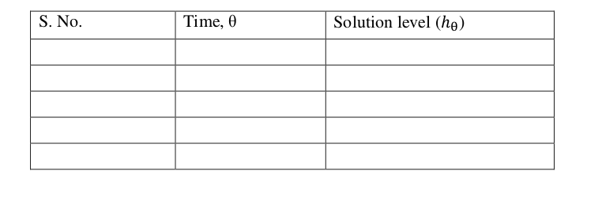

OPEN PAN EVAPORATOR
AIM
I. To determine the overall heat transfer coefficient, capacity, steam consumption, and
economy of an open pan evaporator.
THEORY
Evaporation is a process of concentrating the solution of a non-volatile solute and volatile
solvent (water). The concentrated solution is produced by the removal of required amount
of volatile solvent. The heat is supplied to the solution to increase the temperature of the
solution to its boiling point and to evaporate the solvent from the solution. The heat transfer
coefficient of an open pan evaporator reduces due to the deposition of solids from the
evaporating solution into the evaporator heat transfer surface, which gives rise to an
additional heat transfer resistance. Also, the heat transfer area may reduce with time with a
decrease in the liquid level, resulting in an additional decrease in the heat transfer coefficient.
EXPERIMENTAL PROCEDURE
- Prepare 10 wt. % solution of sodium carbonate and fill evaporator up to hemispherical
level.
- Record the level of solution.
- Fill the steam generator about 3/4 th of its capacity with water and set the temperature
of steam with the help of a digital temperature controller.
- Open the valve of steam when the set temperature of steam is achieved.
- Record the temperature of solution.
- When this temperature becomes almost constant, note the height of solution with the
help of scale and start the stop watch.
- Record the height of solution at different instants of time, e.g., every three minutes for
around ~90 min.
OBSERVATIONS AND CALCULATIONS
SPECIFICATIONS
Radius of sphere, R :
0.145
m
Solution temperature, Ts :
###
Entering steam temperature, Tc :
###
Amount of condensate collected, Wc :
###
Observation Table

Calculations
RESULTS AND DISCUSSIONS
Overall heat transfer coefficient, U :
###
###
###
###
Plot Uθ vs θ and explain your results.
###
PRECAUTIONS
- Never run the apparatus if power supply is less than 180 volts and above 230 volts.
- Never switch ON mains power supply before ensuring that all the ON/OFF switches
given on the panel are at OFF position.
- Operator should switch OFF the temperature indicator gently.
- Always keep the apparatus free from dust.
REFERENCES
- Coulson, J.M., Richardson, J.F., "Coulson & Richardson's Chemical Engineering Volume
2", 5th ed., Asian Books ltd., ND, 1996, Page 623-624.
- Jutz-Scharkus, "Westarmann Tables", 3"1 ed., New Age International Publishers., ND,
2008, Page 32.
- Arora, D., "A Course in Heat & Mass Transfer", 6th ed., Dhanpat Rai & CO.(P)
LTD.,NY,2003, page A.6.
- Geankoplis, Christie. Transport processes and separation process principles (includes unit
operations). Prentice Hall Press, 2003.